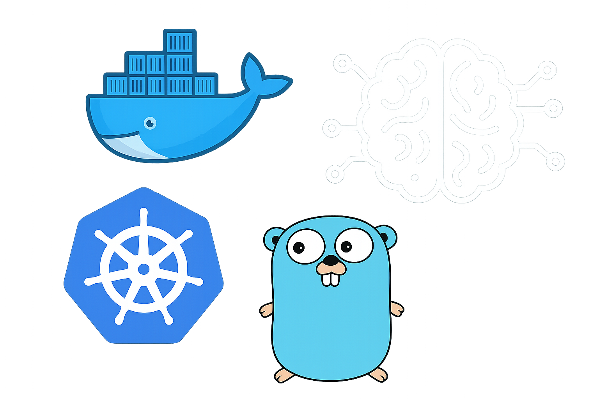
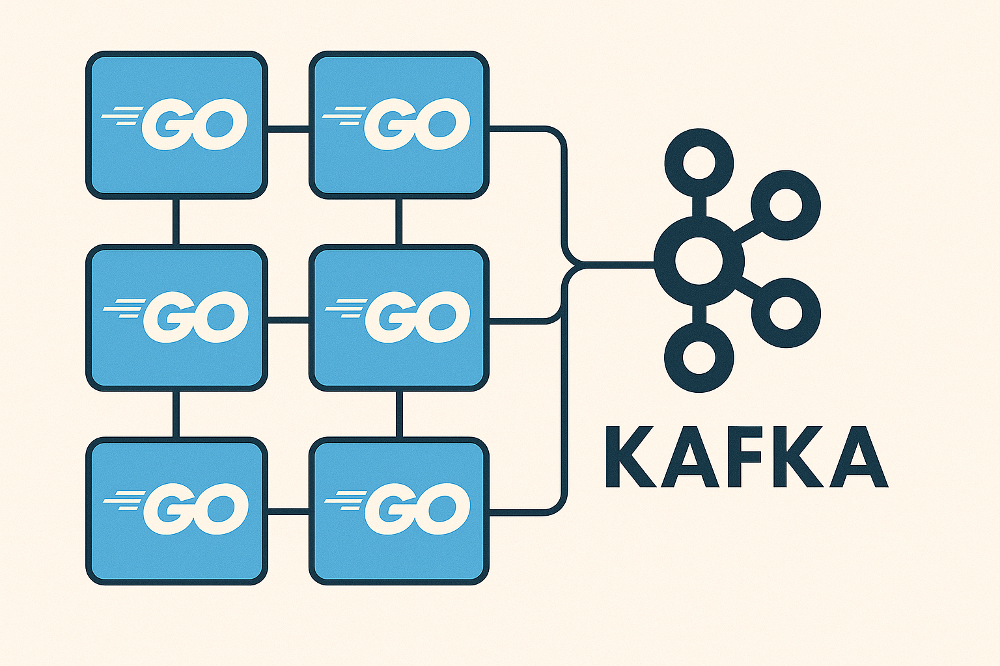

Hello, I'm
Franco Rupnik
A Computer Engineer with 2 years of Experience.


My final course project developed at ITBA. This private repository showcases a Docker monitoring tool built primarily with Go, complemented by Python and Shell scripting. It is designed to monitor and manage Docker containers, providing insights and operational automation. The project demonstrates my ability to architect multi-language systems, utilize modern DevOps practices, and deliver robust monitoring solutions.
TaskComposer is a microservices-based project designed to orchestrate and manage distributed tasks efficiently. Developed primarily in Go and Java, with supporting components in Python and Shell, it demonstrates my proficiency in building scalable, modular systems using modern software engineering practices. The architecture leverages containerization and automation to ensure reliability and adaptability, making it a robust solution for complex workflow management.

ReviewRealm is a full-stack web application project focused on modern RESTful API design with HATEOAS principles. The backend is built using Java with Spring and Hibernate, while the frontend leverages Angular 16 for a dynamic and responsive user experience. In this project, I contributed to both backend and frontend development, gaining hands-on experience with robust API creation, seamless client-server integration, and modern web application architecture.
bizcocho_OS is a low-level systems programming project developed as part of the Operating Systems course. The project, written primarily in C with some Assembly, demonstrates my ability to work close to the hardware, manage memory, and develop efficient, robust system components. Through this project, I gained valuable experience in operating system concepts, low-level debugging, and cross-language integration.
Bandoru is a cloud service designed for efficient and secure code sharing, developed as part of my AWS-focused coursework. The project leverages TypeScript and HTML for the frontend, while Python powers the backend services. Infrastructure as Code is implemented using HCL and Docker, enabling scalable deployment on AWS. Through Bandoru, I gained practical experience in cloud architecture, secure file handling, and automated deployments.
Stronk is a comprehensive fitness application available as both a web platform and a native Android app. The web interface, developed with Vue.js and JavaScript, offers a responsive and interactive experience for tracking workouts and progress. The Android application, built in Kotlin, provides robust mobile functionality for managing exercises and routines anywhere, anytime. This project demonstrates my cross-platform development skills, with a focus on user-centered design and seamless integration between web and mobile experiences.
GeeksforGeeks is a leading platform that provides computer science resources and coding challenges for programmers and technology enthusiasts, along with interview and exam preparations for upcoming aspirants. With a strong emphasis on enhancing coding skills and knowledge, it has become a trusted destination for over 12 million plus registered users worldwide. The platform offers a vast collection of tutorials, practice problems, interview tutorials, articles, and courses, covering various domains of computer science.
Our exceptional mentors hailing from top colleges & organizations have the ability to guide you on a journey from the humble beginnings of coding to the pinnacle of expertise. Under their guidance watch your skills flourish as we lay the foundation and help you conquer the world of coding.

francorupnik@gmail.com
frupnik@itba.edu.ar